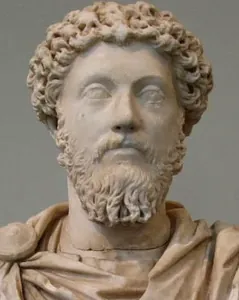
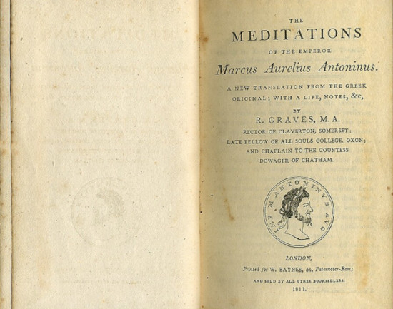

"Se você está sofrendo por coisas externas, não são elas que estão te perturbando, mas o seu próprio julgamento sobre elas. E está em seu poder anular este julgamento agora."

Marco Aurélio (121–180 d.C.) foi um dos mais influentes imperadores romanos, governando de 161 a 180 d.C. Ele é amplamente reconhecido como o último dos "Cinco Bons Imperadores" e simboliza o apogeu da Pax Romana.
Aqui estão os pontos principais sobre sua vida e legado:
Durante anos de seu reinado, Marco Aurélio praticou o estoicismo, uma filosofia que ensina a não permitir que fatores externos dominem nossa mente e nossas emoções.
Ao longo da vida, ele escreveu reflexões pessoais sobre disciplina, virtude e a maneira de enfrentar as dificuldades da existência. Mais tarde, esses escritos deram origem a "Meditações", um livro que se tornou uma das obras mais influentes do estoicismo.

"Se algo externo te aflige, a dor não é causada pela coisa em si, mas pela sua própria estimativa dela; e isso você tem o poder de revogar a qualquer momento."
Essa frase me fez perceber como os seres humanos são gananciosos, já que queremos controlar todas as coisas, sendo que, neste mundo, nada realmente nos pertence. Contudo, acredito que devemos buscar ser melhores e evoluir a cada dia.
Mesmo com o passar dos séculos, suas ideias ainda influenciam pessoas que buscam disciplina, tranquilidade, autocontrole e autoaperfeiçoamento.